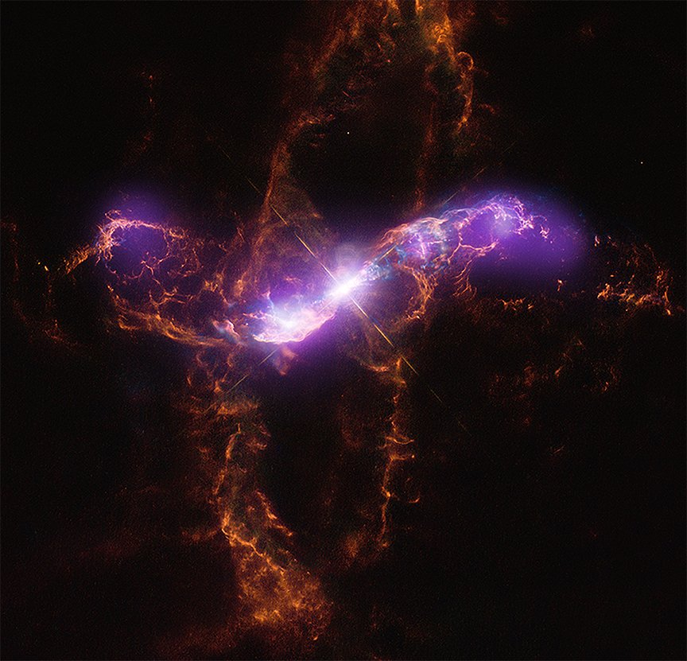

Bookmarks
@WebDev

@XiugeZheng • Jul 31
In R Aquarii, a dense white dwarf orbits a cooler red giant star. The white dwarf pulls material from the red giant onto its surface, and with time, the build-up causes a combustion.

Approximately 17 million light-years from Earth
The dwarf galaxy NGC 1705 featured in this image from the NASA/ESA Hubble Space Telescope lies in the southern constellation Pictor, approximately 17 million light-years from Earth. NGC 1705 is a cosmic oddball – it is small, irregularly shaped, and has recently undergone a spate of star formation known as a starburst.
@AliceBones • Feb 13
Erin Jackson has become the first Black woman to win a speedskating medal at the Winter Olympics. A gold one, at that, historical for Team USA.
Erin Jackson of the United States celebrates with the national flag of the United States after winning gold at the Beijing Winter Olympics, Feb. 13, 2022.
Jackson's gold came after teammate Brittany Bowe gave up her spot on team to ensure Jackson would get to skate in Beijing.